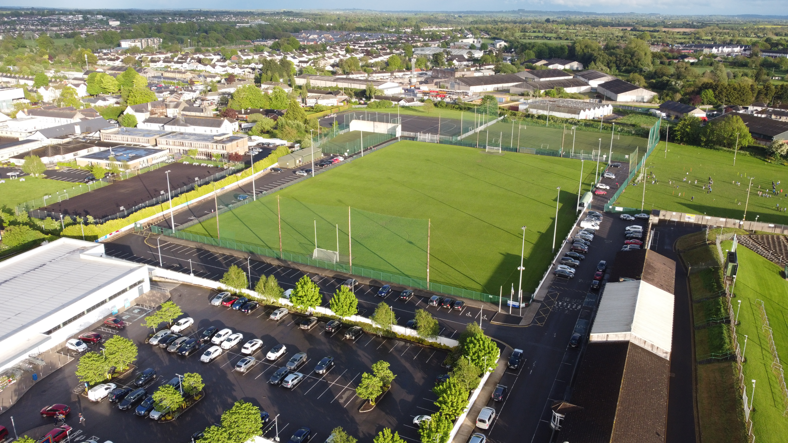
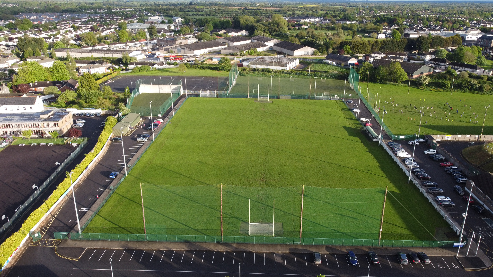
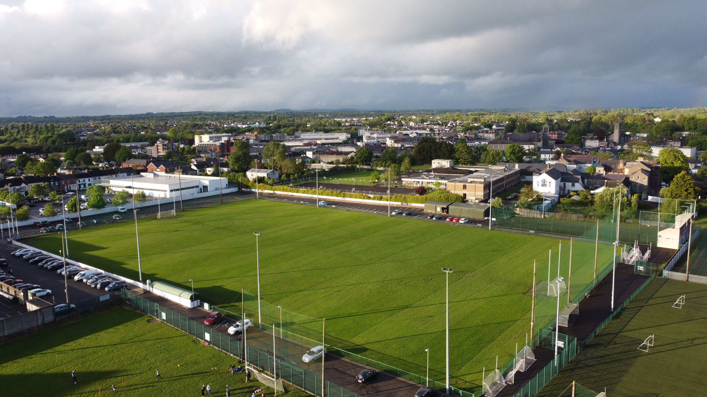

Every club has a story. The early morning training sessions, the build-up before a big game, the culture in the dressing room that outsiders never see. We tell that story — from above and at ground level — in a way that makes members proud and attracts the next generation.
Aerial drone shots of your ground from the DJI Mavic Mini 4 Pro pair with close-up, pitch-side camera work on the Canon 90D to give you content that actually captures the atmosphere. Not just highlight clips — real storytelling about what your club is made of.
We work with GAA clubs, soccer clubs, athletics clubs, and any community sports organisation that wants to show the world what makes them different. Whether it's a one-off match-day package or an ongoing content relationship through the season, we're flexible to what you need.
What's Included
- Match-day aerial and ground-level coverage
- Training session montages and short reels
- Pre-season hype videos edited for social media
- Club culture documentary pieces — interviews, behind-the-scenes
- Aerial shots of grounds, pitches, and facilities
- Event and finals day coverage packages
Who It's For
GAA clubs, soccer clubs, athletics clubs, rugby clubs, and any community sports organisation in Ireland that wants high-quality content to share with members, attract players and sponsors, and tell the story of who they are.


